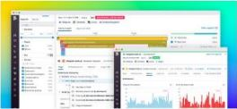

Thanks for downloading our Front-End Development Kit
The Resources below are meant to serve as a tool-kit to assist developers in better understanding user activity and trouble-shooting front-end issues as efficiently as possible.
THIS KIT CONTAINS:
- 2 Best Practice Guides
- A synthetic Monitoring APM Solution Breif
- An On-Demand Webinar

Front-End Monitoring
Best Practice Guide
Learn how to apply Front-End Monitoring best practices.
Front-End Monitoring
Best Practice Guide
Learn how to apply Front-End Monitoring best practices.
Front-End Monitoring
Best Practice Guide
Learn how to apply Front-End Monitoring best practices.
Front-End Monitoring
Best Practice Guide
Learn how to apply Front-End Monitoring best practices.
Want to troubleshoot Front-End issues faster with DataDog?
Learn more about our Digital Monitoring Suite here.
If you're ready to unify your front-end and back-end data in minutes, start a free trial, build one dashboard, and we'll sent you a free DataDog T-shirt.
Visit datadog.com/frontend for an on-demand demo of out Digital Experience Monitoring Suite.